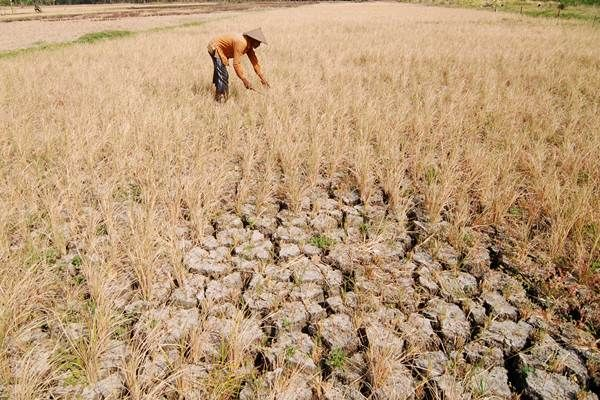
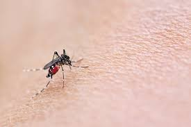
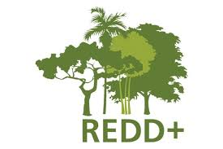
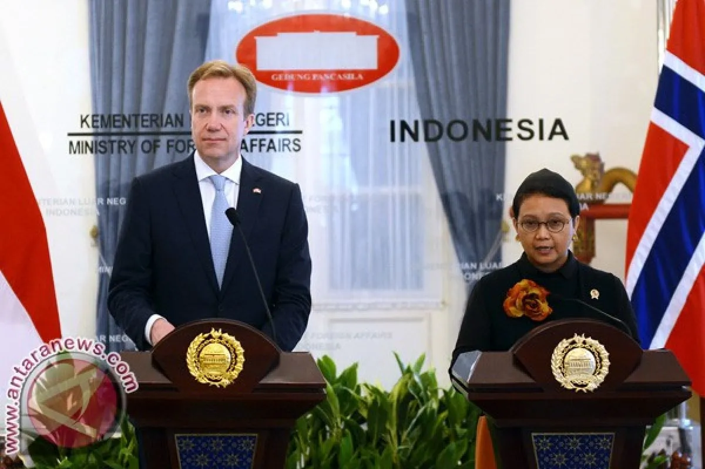

Nomor 13, yaitu Penanganan Perubahan Iklim, saya pilih untuk memperdalam. Saya memilih nomor 13 ini karena memang pada saat ini, bumi sedang mengalami perubahan iklim yang sangat drastis, dan faktor utamanya adalah perbuatan manusia, saya ingin menemukan solusi yang dapat dan perlu dilakukan untuk melakukan penanganan perubahan iklim. Beberapa faktor lainnya yang mendukung terjadinya perubahan iklim adalah: Deforestasi Pembakaran bahan bakar fosil Menggunakan barang/mesin yang menghasilkan CO2 Dll.
Di Indonesia, perubahan iklim mengubah beberapa hal, yaitu: Suhu di siang hari dan malam hari mengalami peningkatan. Hal ini dapat mempengaruhi kenyamanan tidur/istirahat, kesehatan, pertanian, serta ekosistem. Musim kemarau menjadi lebih panjang dan musim hujan menjadi lebih pendek. Ketika musim kemarau menjadi lebih panjang, tumbuhan para petani akan kepanasan, menjadi kering/layu/mati, sehingga akan mempengaruhi ekonomi para petani, karena tidak dapat panen. Penyakit musiman, terjadi juga karena suhu udara yang lembab, dan akan menyebabkan demam berdarah serta malaria.
 Indonesia dan Norwegia bekerja sama dalam upaya mengurangi deforestasi melalui inisiatif REDD+. Norwegia berkomitmen untuk mendukung upaya ini dengan bantuan finansial sebesar, sebagai imbalan atas hasil pengurangan emisi dari deforestasi. Tujuan utama dari kerja sama ini tentunya adalah mengurangi emisi gas rumah kaca yang dihasilkan oleh deforestasi dan degradasi hutan. Bentuk kerja sama yang terjalin antara Indonesia dengan Norwegia melalui inisiatif REDD+ ini adalah kerja sama bilateral, karena antara 2 negara.
 